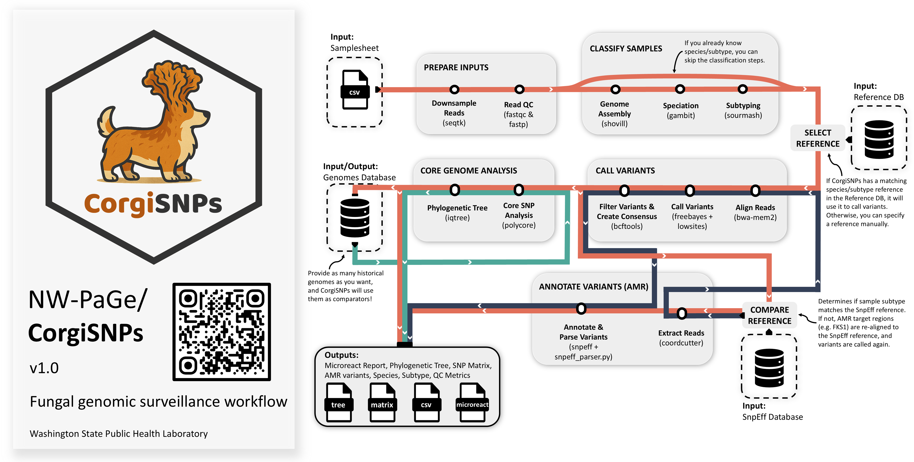

Key Features
CorgiSNPs is a fungal genomic surveillance pipeline.
- 🍄Single, streamlined workflow that integrates common analyses
- 🍄Automatically maintains a database of historical isolates used as contextual isolates in phylogenies
- 🍄Supports diploid fungi
-
🍄Genomics-first approach:
- •No need to pre-select contextual isolates manually
- •Selects contextual isolates dynamically based on genetic relatedness